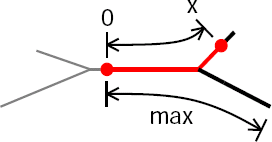

Specifying parameterized variation of biophysical properties
A large body of experimental data indicates that neuronal membrane properties can be nonuniform. For example, in some cell classes there is evidence that channel densities vary with location in a systematic manner. With the CellBuilder it is possible to specify that channel densities and other biophysical properties are functions of position.
For this tutorial, we return to our stylized model

but now we want gnabar_hh, gkbar_hh, and gl_hh in the apical dendrites to decrease linearly with distance from the origin of the apical tree.
Geometry
Section |
L (um) |
diam (um) |
Biophysics |
|---|---|---|---|
soma |
20 |
20 |
hh |
ap[0] |
400 |
2 |
hh* |
ap[1] |
300 |
1 |
hh* |
ap[2] |
500 |
1 |
hh* |
bas |
200 |
3 |
pas |
axon |
800 |
1 |
hh |
gnabar_hh,gkbar_hh, andgl_hhvary with distance from the origin of the apical tree
All have “full” density at origin of apical tree.
Density falls to 0% at the most distant termination.
To ensure that resting potential is -5 mV throughout the cell, e_pas in the basilar dendrite is -65 mV.
Other parameters: cm = 1 uf/cm^2, Ra = 160 ohm cm.
Before we start, let’s restate the problem in mathematical terms.
Consider sodium conductance. For every point in the apical tree, we want the sodium conductance density at that point to depend on the fractional, or normalized, distance from the origin of the apical tree to that point. So we want gnabar_hh to vary with p, the normalized distance into the apical tree, according to this formula
gnabar_hh = 0.12 * (1-p) where p = L0x / Lmax
We also want gkbar_hh and gl_hh to be governed by similar formulas.
This is a special case of a more general task: the problem of how to specify that a parameter param is some function f of p
param = f(p)
where p is one of the following distance metrics:
path length (along the centroid of sections) from a reference point
radial distance in space from a reference point
distance from a plane, e.g. depth from the cortical surface, or distance above or below a cortical layer
If we were trying to do this by writing our own hoc code, we might come up with something like this:
forsec subset for (x,0) { rangevar_suffix(x) = f(p(x)) }
where p is a function that returns one of the three distance metrics mentioned above
The CellBuilder’s uses something called the SubsetDomainIterator class. to help us achieve the same effect very easily, and usually without having to write any code.
Let’s see how this works.
Step 1. Set up a SubsetDomainIterator
by specifying the subset over which it will iterate, and the distance metric it will use
Step 2. Specify the model parameter(s) to be varied
Step 3. Specify and verify the functions that govern the parameters
Step 4. Use the model specification